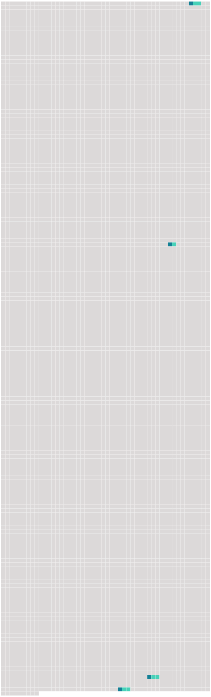

Longueur nb maillons : 4 mentions |
 |
Titre Ier : Des autorités chargées de l'action publique et de l'instruction [63 phrases]
Article R15-11 [88 phrases]
A l'occasion d'une enquête judiciaire ou de l'exécution d' [une commission rogatoire] , ils ne peuvent solliciter ou recevoir des ordres ou instructions que de l'autorité judiciaire qui les a requis. [4 phrases]
Article R15-33-22 |
 |
Il est possible de télécharger la ressource sur la page Ortolang |
Si vous avez des questions ou vous voyez des erreurs, merci d'envoyer un mail à silvia.federzoni89@gmail.com |